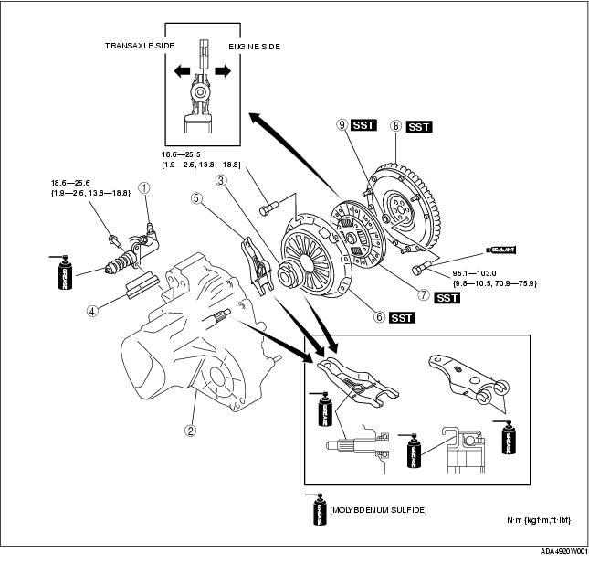
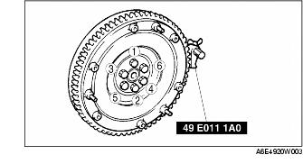
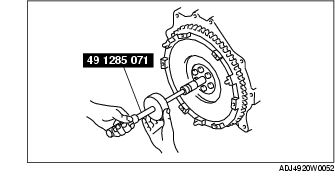
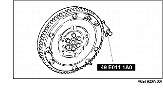
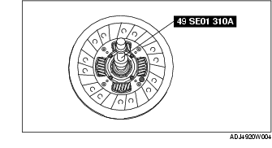
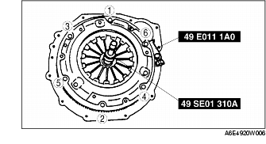

Clutch unit removal/installation
1. Remove in the order indicated in the table.
2. Install in the reverse order of removal.

.
|
1
|
Clutch release cylinder
|
|
2
|
Manual transaxle
|
|
3
|
Clutch release collar
|
|
4
|
Boot
|
|
5
|
Clutch release fork
|
|
6
|
Clutch cover
|
|
7
|
Clutch disc
|
|
8
|
Flywheel
(See Flywheel Removal Note.)
(See Flywheel Installation Note.)
|
|
9
|
Pilot bearing
(See Pilot Bearing Removal Note.)
|
Clutch Cover and Disc Removal Note
1. Install the SSTs.
2. Loosen each bolt one turn at a time in a crisscross pattern until spring tension is released.
3. Remove the clutch cover and disc.

Flywheel Removal Note
1. Hold the flywheel using the SST.
2. Remove the bolts evenly and gradually in a crisscross pattern.
3. Remove the flywheel.

4. Inspect for oil leakage from the crankshaft rear oil seal.
Pilot Bearing Removal Note
1. Use the SST to remove the pilot bearing.

Pilot Bearing Installation Note
1. Use the SSTs to install the pilot bearing.

Flywheel Installation Note
1. Install the flywheel to the crankshaft.
2. When reusing the bolts, clean threads and hole, then apply locking compound to the threads.
3. Hand-tighten the flywheel lock bolts.
4. Install the SST to the flywheel.

5. Gradually tighten the flywheel lock bolts in a crisscross pattern.
Tightening torqueClutch Disc Installation Note
1. Hold the clutch disc position using the SST.

Clutch Cover Installation Note
1. Install the SSTs.
2. Tighten the bolts evenly and gradually in a crisscross pattern.

Tightening torque